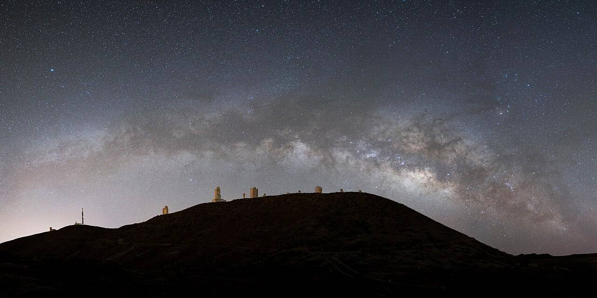
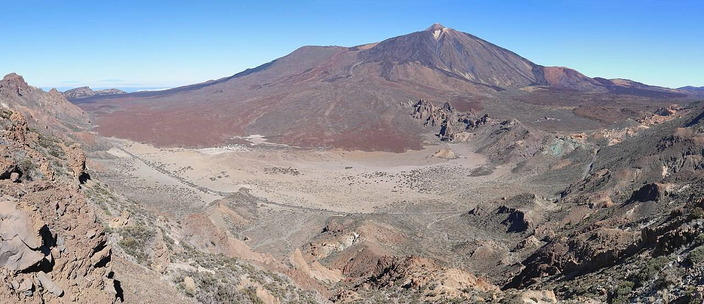
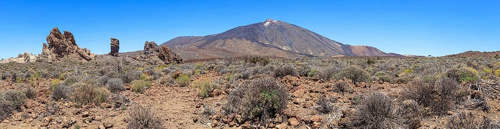

Slapen op een vulkaan, boven de wolken, onder de Melkweg
De enige Parador midden in het nationale park, zondag zon aan de kust en om 19:00 terug.
Geen all-in hotel aan de boulevard, maar de enige Parador midden in Las Cañadas del Teide (locatiescore 9,8). Overdag een maanlandschap, 's nachts de Melkweg.
Gallery






Wat het kost
- Vluchten€302
- Parador, 2 nachten€579,94
- Huurauto (schatting)€120
- Vaste kosten voor 2 personen€1.001,94
Voor 2 (schatting). Comfort: Teide-kabelbaan (€42 p.p. retour) plus diners in de Parador. Luxury: sterrenkijktour met gids. Reis van huis naar de vertrekluchthaven is niet meegerekend.
Flights
Op 5 tot 7 maart €15 p.p. goedkoper, maar dan is de Parador vol. Tenerife ligt 1 uur achter.
The Stay
Parador de Las Cañadas del Teide
8,6Het enige hotel in het nationale park, aan de voet van de Teide. Binnenzwembad, restaurant, gratis parkeren. Je bent er als de dagjesmensen weg zijn.
- Superior Double, 20 m², ontbijt inbegrepen
- €579,94 voor 2 nachten, 2 personen · €542 + 7% IGIC. Zonder ontbijt €492,20; halfpension (niet-restitueerbaar) €649,49
- Gratis annuleren tot 5 mrt 2027, betalen in het hotel
- Check-in 14:00 tot 20:30, check-out tot 12:00
Getting there
- Huurauto vanaf TFS nodig. Niet live gecontroleerd: schatting €120 voor 3 dagen incl. brandstof
- Landing 10:05, ca. 1 uur rijden, check-in vanaf 14:00: lunch onderweg. Check-out 12:00, vlucht 19:00: middag strand.
Het weekend
- Vrijdag
De berg op
10:05 landen, auto ophalen, via Vilaflor omhoog. Check-in 14:00, zonsondergang boven de wolken, sterren kijken voor de deur.
- Zaterdag
Teide en Roques de García
Vroeg met de kabelbaan (de top zelf vraagt een gratis permit, ruim vooraf). Wandeling rond de Roques, middag Masca of Los Gigantes.
- Zondag
Van vulkaan naar strand
Zonsopkomst, check-out, afdalen naar de zuidkust. Strand en lunch, auto inleveren rond 17:00, vlucht 19:00.
Pablo-score 8,1
- Prijs-kwaliteit 25%7,5
- Hotel 25%8,0
- Bestemming 20%9,0
- Reisgemak 15%7,0
- Activiteiten 10%9,0
- Uniek 5%10,0
Sterk
- Meest bijzondere overnachting van de editie
- Kustzon en sterren in één weekend
- Terugvlucht pas om 19:00
Minder sterk
- Huurauto nodig, nog niet geprijsd
- Op 2.000+ meter 's nachts koud
- Langste reistijd: 4u45 vliegen
Voor iets wat niemand op zijn feed heeft. Boek de Parador eerst, de vlucht is flexibeler.PabloAlle gedeelde trips